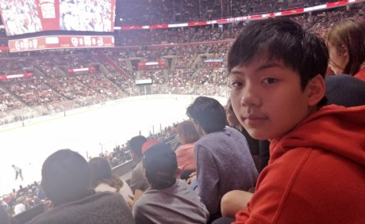

I was born in 2006, in Shenzhen, China. I started playing hockey at the age of 8 and ever since then, it has been my favorite sport. My first contact with the sport of hockey was during the summer of 2013, and strangely enough the first position I played was goalie, which I hated with a passion. In result I decided to become a forward. Ever since becoming a hockey player, I have proved myself as one of the most talented people out there. I constantly dominated the players within my age group and competed with older players. As a reference, I was playing in the u12 league at the age of 10, and I was also the top scorer with 53 points among the span of 18 games. Within a few years I have become the best player in China at my age group, and it was time for a bigger stage in order to continue my hockey career. As a result, I came to Canada, a place where the world¡¯s best junior hockey players compete. As of now, I am playing for the Toronto Young Nations, an AAA team (highest division possible for juniors) and I am working hard in order to move on to the next big stage, the OHL.
I don't consider myself as a hard core gamer, but I extremely enjoy the pleasure of gaming. Since I am a sports person myself, my favorite games are sport games. That is because I feel connected to the characters, when playing. I often imagine myself the players inside it, which brings me plenty of joy. Something every sports fan has imagined is putting the best players in history all on one team, and in a video game, this can become a "reality". With the game modes provided, we can see a glimpse of what a team with such caliber can do. Unlike the majority, I am not fond of shooting games, they make my head dizzy with all the rotations and movements, and most importantly I am horrible at aiming.
Music is an indispensable part of my life. It brings life and color into our world. Strangely enough, as much as I am fond of listening to music, I absolutely despise playing an instrument. I played viola in middle school, and it is an experience I never want to look back at. My fingers had to move at light speed in order to keep up with the ever changing notes, and the music that came out sounded like a dying pig. However, I think the reason of so is just because I am painfully bad at playing an instrument. That is why I enjoy listening to music much more. The melodies and the lyrics all come together perfectly for an aural feast that millions of people enjoy worldwide.